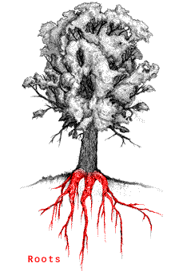
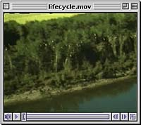

Flowers & Cones
Leaves
Trunk
Roots
|

There are two types of trees found in Saskatchewan; those that
produce covered seeds from flowers (angiosperms or flowering
plants) and those that produce naked seeds in cones (gymnosperms).
Despite their variations in appearance, all trees have essentially
the same basic structure. They have a central column - the trunk
- supporting a framework of branches
(the crown). The branches in
turn bear an outside covering layer of leaves. Anchoring the tree in the ground is a network
of roots, which spreads and
grows thicker in proportion to the growth of the tree above the
ground. In a mature tree, most of the cells of the trunk, roots,
and branches are dead or inactive. All growth of new tissue takes
place at only a few points on the tree, by the division of specialized
cells. These actively growing areas are located at the tips of
branches and roots and in a thin layer just inside the bark. Lastly,
trees have reproductive structures; either flowers or cones.
|
 In the history of evolution, vascular plants can be compared to the first land animals - they have the ability to reproduce away from water and can survive in the harsh climates found on land. The development of a system of vascular tissue allowed these plants to grow tall, obtain and distribute nutrients to all parts of the plant and occupy a greater variety of habitats. The trees in Saskatchewan are examples of vascular plants that have adapted to a particularly harsh environment. |